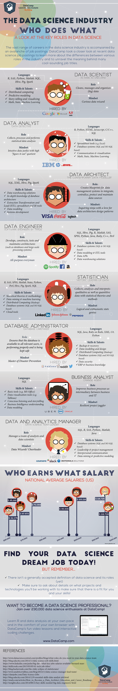

What Do We Mean When We Use The Term "Data Scientist"?
By Tamer Khraisha
It is a very common practice these days that many people call themselves Data Scientists. The amount of available data and the need for specialists in data analysis, predictive analytics and machine learning have been increasing very fast in the last few years. For this reason, an increasing number of people has offered themselves to the markets as data scientists. The question here is, what is really a data scientist?
Searching online, I found that there are a variety of opinions and criticism about whom we should call a data scientist. Generally speaking, the data science position is usually correlated with knowledge in programming and statistics. However, for Chuck Russell the story is more complex than programming and statistics. Programming languages like Python, C++, Java and MySQL are data science tools, however, proficiency in these languages is not what makes someone a good data scientist. Similarly, knowledge in mathematics, statistics and machine learning, while valuable and important, are not sufficient when the problem solving tasks at hand require real world experience.
In Chuck’s opinion, “calling yourself a scientist indicates that you practice science following a scientific method. You create hypotheses, test the hypothesis with experimental results and after proving or disproving the conjecture move on or iterate". Data science is about the creation and testing of models, methods, hypothesis, simulation techniques and algorithms that provide predictive and practical utility to understand complex real world phenomena. The practical utility lies in helping to solve complex problems. A good data scientist should be able to identify what problems need to be solved, ask the right questions about the data and identify the right scientific and technical methods to be used to analyze such problem.
Blei and Smith, in an interesting article in PNAS, explored the field of data science from statistical, computational,
and human perspectives, identifying which views and attitudes we
can draw from to develop data science for science.
Statistical thinking is an essential component. Statistics provides the foundational techniques for analyzing and reasoning about data. Computational methods are also key, particularly when scientists face large and complex data and have constraints on computational resources, such as time and memory. Finally, there is the human angle, the reality that data science cannot be fully automated. Applying modern statistical and computational tools to modern scientific questions requires significant human judgment and deep disciplinary knowledge
On the other hand, some like to Amit Gupta, sustain that we should know that the ‘data scientist’ job is one of several job titles that may be offered in a data centric company. He provides the following list
• Hadoop Developer: is a developer. He/She may be a java developer, c# developer or Android/iOS developer. They make applications on Hadoop Platform that can be used by the end customer.
• Hadoop Architect: deals with setting up of the whole Hadoop architecture according to the needs of the Company. He/she is responsible for making Nodes, connecting them, monitoring the traffic, preventing network glitches.
• Hadoop Tester: is similar to any other software tester, but with a broad knowledge of Hadoop Platform and HDFS.
• Hadoop Administrator: is similar to a DBA. The only difference is , she manages hdfs and not the basic oracle or Microsoft database. Administrator has to work on the physical as well as the logical layer. Grant and revoke permissions to various clients and nodes.
• Data Scientist: has the responsibility of scraping the data off a client , clean it, organize it, apply regression algorithms it, form logical questions on the given data and finally make predictions using those machine learning regression models.
In an interesting article, DataCamp analyzed the varieties of data science job postings in an attempt to unravel these cool-sounding and playful job titles into a comparison of different data science related careers. They summarized the results in an infographic that they called “The Data Science Industry: Who Does What”. Below I show the infographic.
